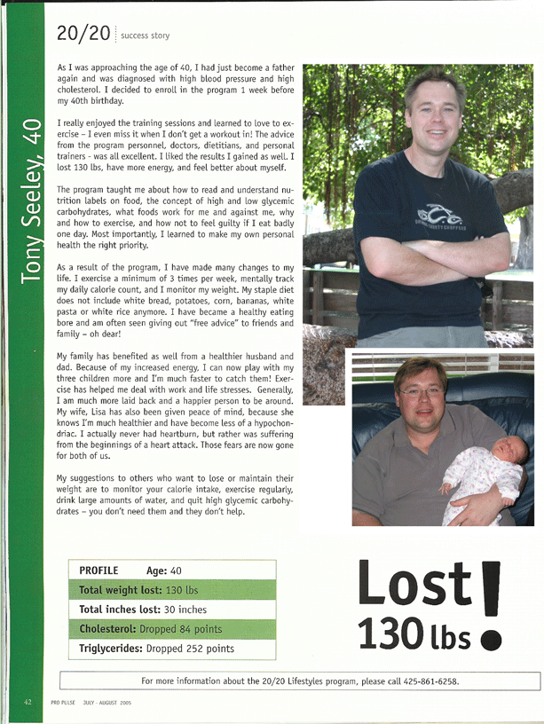

Weigh Loss Published in Print!The sports club I'm a member of has a monthly magazine and they asked me if I would mind appearing in it with some pictures describing my weight loss success. Being the shrinking violet I am, I of course said "YES PLEASE" immediately. The following image is a scan taken from this months magazine. Two things are of interest in the copy.
|
 | |||
Seattle PI ArticleThe following article appeared in the Seattle PI news paper (front cover) on September 20th, 2005. Looks like I finally made the news paper - for being fat!Microsoft tackles weighty issues: 800 workers, 26,000 lbs. lostBy Angela GallowaySeattle Post-Intelligencer Reporter Tony Seeley knew he was in trouble the day his doctor told him he had the body of a healthy 62-year-old man. "Which is nice if you're 63," Seeley said. "But I was 39." For years, Seeley struggled with all the familiar weight-loss themes: fad diets, bad eating habits, discouragement. But not long after that day at his doctor's office, Seeley found his breakthrough thanks to an unlikely partner: his boss. "It was a revelation," Seeley said. "I lost 130 pounds, and I did it in 10 months." Seeley was among nearly 800 Microsoft Corp. employees who have shed about 26,000 pounds through an exceptionally intensive weight-management program offered by the company. While Microsoft takes the benefit to unusually extended levels, health policy insiders say a trend is emerging among employers and insurers to offer comprehensive weight-management programs, even as both sides scramble to trim other benefits to slow the double-digit growth in health care costs. We're not talking gym memberships or diet clubs. These are long-term, doctor-driven, multifaceted programs for the seriously overweight or obese that can run $10,000 or more and sometimes lead to gastric-bypass surgery. Microsoft was among the nation's first companies to roll out such a program, starting with smaller pilot groups in 1999. Early last year, Starbucks Corp. began offering a package to its workers in the Puget Sound area. The programs are similar at both companies: integration of a fitness regimen with dietary and psychological counseling, all the while under the oversight of a medical doctor trained in weight-loss management. Microsoft and Starbucks both say they've found indications that such offerings pay off for their companies' bottom lines. Both cap lifetime benefits and offer them only to employees, partners and dependents who meet certain obesity and health condition criteria. Both companies have contracts with the same clinic group, although Microsoft has since added a second. Both require workers pitch in 20 percent of the costs. "You give them a check for $3,500 and they give you a plastic water bottle," said Seeley, a program manager. "Ten months later, I'm running 5K runs in downtown Seattle. "I would have paid $20,000 out of my own pocket to do this program." The key? Seeley offered an answer that amounted to "all of the above." An exercise regime in a gym friendly to the overweight meant a "huge change" in his lifestyle. The dietary advice revolutionized his understanding of food, especially foods high in carbohydrates such as white rice and pasta. And the support services removed guilt, leaving room for optimism. "You find out you're not a freak and you're not weird and everyone else is having the same frustrations," Seeley said of the program he joined two years ago. To this day, he still exercises several times a week, he said. "I didn't find it hard -- that's the weirdest thing." Last month, insurer Premera Blue Cross unveiled a more moderate menu of options for employers to consider as add-ons. Aetna offers comprehensive "custom" products to large businesses willing to pay for them, and began broad offerings of a slimmer "tiered" package of weight-management benefits earlier this year. Microsoft recently calculated that 774 participants from July 2003 to August 2004 lost an average of roughly 9 percent of their weight, said Tom McPherson, senior benefits manager for Microsoft, which began offering the benefit companywide two years ago and requires participants to enroll for a minimum of six months. Of those who did, 50 had bariatric, or weight loss, surgery. Many saw substantial reductions in their blood pressure and cholesterol levels, without the need for medications, McPherson said. "Many of the people that enter the program haven't accessed medical care for a while," McPherson added. Geoff Thomas, a Microsoft technical support analyst, credits his weight loss for eliminating his grueling migraines -- dramatically cutting his sick days and improving his productivity. In recent years, Thomas dropped from more than 480 pounds to a low of 280. He's now back up to about 320, but he's confident he can lose that and more. "What I needed was a push and since I had responsibility to (a) trainer, I made a commitment to them," Thomas said. "It was like I was doing it for him as well as me." Like Seeley, Thomas says each aspect of the program led to his success: a gym without pressure to look good, accountability to a trainer, a specialized doctor and behavioral counseling. "Instead of keeping things all inside me and bottled up, I could actually discuss (food issues)," Thomas said. "There's actually a lot of psychological work that is going on while you are losing weight." Thomas has taken up trail riding on his bicycle, hockey and in-line skating. "I used to pretty much do nothing," said Thomas, whose social life was largely limited to science fiction and other television programs. As soon as he heals from an injury, Thomas said, he plans to resume teaching skating. "Teaching is just one of the best ways in the world to relate to people." At Starbucks, 41 participants have seen the program through, said Annette King, director of benefits for the company. On average, the participants lost about 20 pounds. Although the data are still preliminary, King said her company has seen substantial reductions in the use of medications for arthritis, back pain and gastroesophageal reflux disease. "We would like to get several years' experience on how long those participants maintained their weight loss," King said. Still, McPherson said it's only a matter of time before other companies see the evidence they need to jump in. "It's very difficult once you roll out a benefit to roll it back, so I think companies are waiting," he said. Last summer, the federal government removed language in Medicare policy that stated obesity was not an illness, opening the door for some Medicare clients to receive anti-obesity treatments, according to Amy Winterfeld, a health policy analyst with the National Conference of State Legislatures. Medicaid and private insurers often mimic Medicare policy, she said. Today, Medicaid programs for the poor and disabled in Washington and nearly all other states pay for weight-loss surgery for qualified patients, according to a report by Winterfeld. Several states require that insurers cover care for the morbidly obese. An unusual local clinical group called Sound Health Solutions has helped put local employers on the innovative edge of this trend. Microsoft was among the first clients of the company, which was established nearly a decade ago by two doctors specializing in internal medicine. "We never really had the time or the resources really to be able to address obesity itself," said Dr. Frances Gough, one of the founders. "So we stepped away from a traditional clinical practice to put together an integrated program." In recent years, Gough said, interest has begun to percolate and some companies are willing to help pay for intensive weight-loss programs. Once the federal government starts covering obesity in general, such programs won't be anomalies for long, said Gough's partner, Dr. Teresa Girolami. "When that happens, I think you'll see a big shift in the insurance industry." DETAILS Here's a quick look at weight-management services offered to Microsoft employees: Eligibility: The employee must have a body mass index of at least 30, or at least 27 with two or more of the following conditions: congestive heart failure, coronary heart disease, diabetes, hyperlipidemia, hypertension. (Body mass index is a measure of body fat based on height and weight that applies to both men and women. An index of more than 30 is considered obese.) Medically supervised services include an intensive phase involving at least 10 sessions with a physician, personal fitness trainer, dietitian and behavioral therapist. That's followed by three months of follow-up and maintenance with professionals on a less rigorous but still-regular schedule. Success: In a one-year period, nearly 800 participants lost a total of about 26,000 pounds. The average weight loss was 30 pounds per person. The number of participants with high cholesterol fell by 50 percent, and the number with high blood pressure fell by 30 percent. Source: National Institute of Health Care Management |
Microsoft employee Tony Seeley begins a treadmill run at Redmond's Pro Sports Club, part of the company's intensive weight-loss program. Tony Seeley in May 2003, before the Microsoft employee lost 130 pounds. |
|||